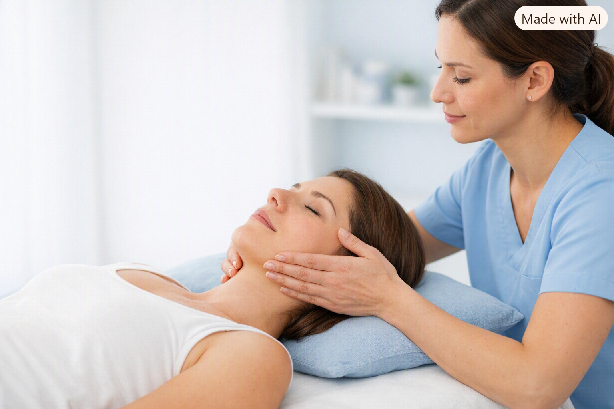
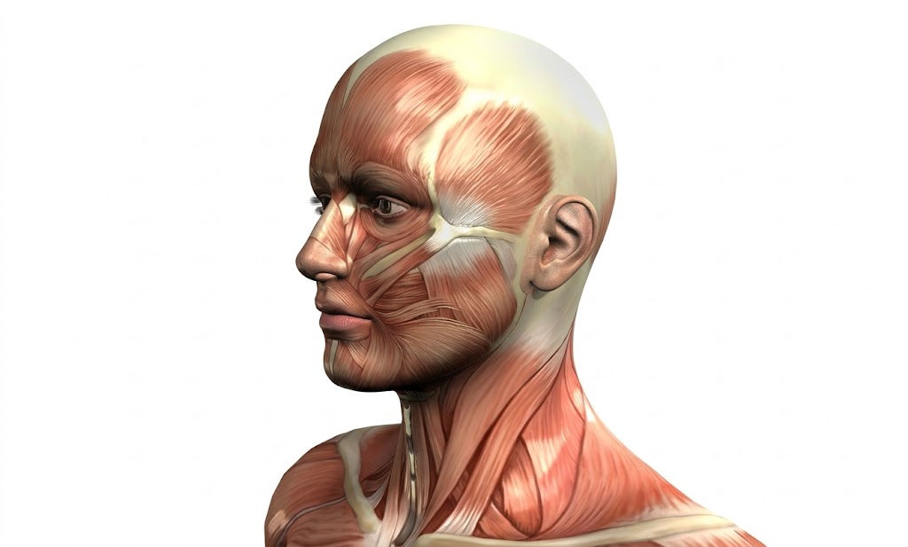
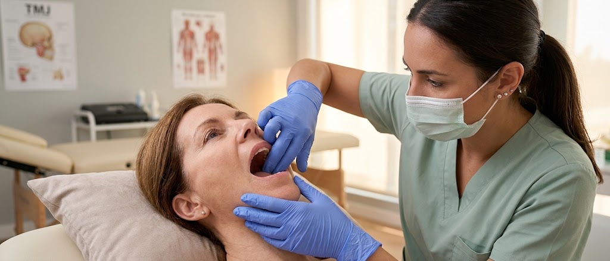

ATM y Bruxismo
Evaluación y tratamiento kinésico para dolor mandibular, bruxismo, tensión muscular, molestias al abrir o cerrar la boca y otros síntomas del sistema estomatognático.
Atención personalizada
Enfoque integral
Basado en evidencia
Atención presencial en Mar del Plata

Menos dolor,
más bienestar
para tu día a día
¿Te sentís identificado/a?
Muchas personas conviven con molestias en la mandíbula sin saber que pueden tratarse. Estos son algunos de los síntomas más frecuentes:
Bruxismo
(rechinar o apretar los dientes)
Tensión al despertar
Rigidez mandibular
o dificultad para abrir la boca
Dolor de cabeza frecuente
Tensión en cuello, hombros y espalda
Ruidos en la articulación
(chasquidos)
Molestias al masticar
¿Qué problemas se pueden abordar?
El tratamiento puede orientarse a personas con dolor en la articulación temporomandibular, tensión en la musculatura masticatoria, molestias al abrir o cerrar la boca, bruxismo, sensación de rigidez mandibular y alteraciones funcionales del sistema estomatognático.
¿Qué es la ATM?
La articulación temporomandibular conecta la mandíbula con el cráneo y participa en funciones cotidianas como hablar, masticar y bostezar.
Cuando existe una alteración en la articulación, la musculatura, la movilidad o la coordinación del sistema estomatognático, pueden aparecer dolor, rigidez, ruidos articulares o limitación del movimiento mandibular.

¿Qué es el bruxismo?
El bruxismo se relaciona con la actividad repetitiva de la musculatura masticatoria y puede presentarse durante el sueño o en vigilia.
En algunas personas puede asociarse con tensión muscular, dolor mandibular, cefaleas, rigidez al despertar y molestias en la región cervical.
El bruxismo no solo afecta los dientes: también influye en la musculatura, la articulación y tu calidad de vida.
¿Cómo puedo ayudarte?
El tratamiento se adapta a lo que encontrábamos en la evaluación, a tus síntomas y a tus objetivos. No todas las personas necesitan las mismas técnicas ni el mismo abordaje.

Evaluación kinésico-odontológica
Analizo movilidad mandibular, musculatura masticatoria, región cráneo-cervical, biomecánica, postura y función del sistema estomatognático.
Terapia manual
Técnicas manuales orientadas a trabajar movilidad, tensión muscular y función de la región mandibular y cráneo-cervical.
Ejercicio terapéutico
Ejercicios de movilidad, control y función mandibular adaptados a cada paciente y a la evolución del tratamiento.
Punción seca
Puede utilizarse como complemento cuando existen puntos gatillo miofasciales y tensión muscular, según la evaluación clínica.
Electroestimulación
Puede incorporarse como herramienta complementaria dentro del tratamiento kinésico cuando está indicada.
Trabajo interdisciplinario
El abordaje puede complementarse con odontología, ortodoncia u otras áreas cuando el caso requiere un trabajo conjunto.
Abordaje interdisciplinario
La rehabilitación de ATM y del sistema estomatognático puede complementarse con tratamientos odontológicos, ortodoncia y otras intervenciones del área maxilofacial, trabajando de manera integrada según las necesidades de cada caso.
¿Cómo es una consulta conmigo?
La idea es entender qué está pasando en tu caso y armar un tratamiento adaptado a tus síntomas, tu función y tus objetivos.
Te escucho
Conversamos sobre tus síntomas, cuándo aparecen, qué los agrava y cómo afectan actividades como masticar, hablar o dormir.
Evaluamos
Analizo movilidad mandibular, musculatura masticatoria, región cráneo-cervical, postura y función.
Armamos el tratamiento
Seleccionamos las herramientas más adecuadas para tu caso: terapia manual, ejercicio, punción seca, electroestimulación u otras estrategias.
Seguimos tu evolución
Reevaluamos síntomas, movilidad y función para adaptar progresivamente el tratamiento.
Dudas frecuentes sobre ATM y Bruxismo
¿La kinesiología puede ayudar con el bruxismo?
Sí. La kinesiología puede formar parte del abordaje cuando existen dolor mandibular, tensión muscular, rigidez, cefaleas o alteraciones funcionales asociadas al bruxismo.
¿Qué síntomas pueden relacionarse con una disfunción de ATM?
Dolor mandibular, molestias al masticar, chasquidos, limitación para abrir la boca, tensión facial, cefaleas y molestias en la región cráneo-cervical pueden aparecer en algunos pacientes.
¿Necesito tener diagnóstico odontológico antes de consultar?
No necesariamente. La evaluación kinésica permite analizar movilidad, musculatura y función. Si el caso requiere valoración odontológica u otro abordaje, puede indicarse trabajo interdisciplinario.
¿El tratamiento de ATM incluye punción seca?
Puede utilizarse como complemento cuando la evaluación muestra tensión muscular o puntos gatillo miofasciales y existe indicación para aplicar la técnica.
¿También se trabaja la zona cervical?
Sí. La región cráneo-cervical puede evaluarse cuando está relacionada con los síntomas y la función mandibular, integrándola al tratamiento según las necesidades del paciente.
¿Dónde realizás tratamiento de ATM y Bruxismo?
Atiendo pacientes en Mar del Plata con un abordaje kinésico personalizado de ATM, bruxismo y sistema estomatognático.
Si tenés dolor mandibular, bruxismo o tensión al despertar, podemos evaluar qué está pasando en tu caso.
El objetivo es entender tus síntomas, evaluar la función de la ATM y del sistema estomatognático, y plantear un tratamiento adaptado a tus necesidades.
Consultar por WhatsApp